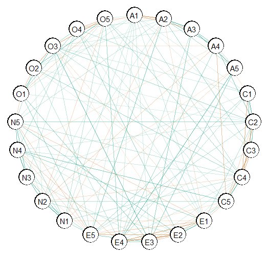
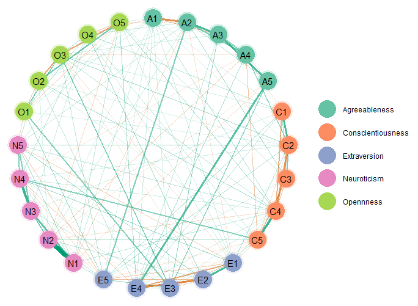

Introduction
This vignette shows how to make network plots.
R packages
# need the developmental version if (!requireNamespace("remotes")) { install.packages("remotes") } # install from github remotes::install_github("donaldRwilliams/BGGM") library(BGGM) library(cowplot)
Estimate
For the estimate methods, it is currently only possible detect non-zero relations and the others are set to zero (no connection in the graph). In a future release, it will be possible to define a region of equivalence to directly assess null values. Hence, it is important to note those nodes not connected are not necessarily conditionally independent (absence of evidence is not evidence of absence).
Fit Model
In this example, I use the bfi data which consists of 25 variables measureing different aspects of personality.
# data Y <- bfi[,1:25] # fit model fit <- estimate(Y)
Select Graph
The next step is to selec the graph or those relations for which the credible excludes zero
# select the edge set E <- select(fit, cred = 0.95, alternative = "two.sided")
alternative can be changed to, say, "greater" which would then perform a one-sided hypothesis test for postive relations. This is ideal for many applications in psychology, because often all relations are expected to be positive. See this blog for more about this topic.
Plot Graph
Here is the basic plot. This works for any object from select (e.g., comparing groups).
plot(E)

Customize Plot
The above is ggplot that can be futher honed in. Here is an example.
# extract communities comm <- substring(colnames(Y), 1, 1) plot(E, # enlarge edges edge_magnify = 5, # cluster nodes groups = comm, # change layout layout = "circle")$plt + # add custom labels scale_color_brewer(breaks = c("A", "C", "E", "N", "O"), labels = c("Agreeableness", "Conscientiousness", "Extraversion", "Neuroticism", "Opennness"), palette = "Set2")

The edge_magnify is a value that is multiplied by the edges, groups allows for grouping the variables (e.g., those thought to belong to the same “community” will be the same color), and the scale_color_brewer is from the package ggplot2 (pallete controls the color of the groups). By default the edge colors are from a color blind palette. This can be changed in plot with the arguments pos_col (the color for positive edges) and pos_neg (the color for negative edges).
This is just scratching the surface of possibilities, as essentially any change can be made to the plot. There is lots of support for making nice plots readily available online.
Layout
It is also possible to change the layout. This is done with the sna package, which is linked in the documentation for plot.select in BGGM. Here is an example using layout = "random"
plot(E, # enlarge edges edge_magnify = 5, # cluster nodes groups = comm, # change layout layout = "random")$plt + # add custom labels scale_color_brewer(breaks = c("A", "C", "E", "N", "O"), labels = c("Agreeableness", "Conscientiousness", "Extraversion", "Neuroticism", "Opennness"), palette = "Set2")

Bayesian Hypothesis Testing
The Bayesian hypothesis testing methods offer several advantages, for example, that evidence for the null hypothesis of conditional independence is formally evaluated. As a result, the explore method in BGGM provides plots for both the conditional dependence and independence structure, in addition to a plot for which the evidence was ambiguous.
To highlight this advantage, ptsd data is used that has a relatively small sample size.
Then plot the results. Note that there are three plots, so the package cowplot is used to combine them into one plot.
plts <- plot(E, edge_magnify = 5, groups = comm) plot_grid( plts$H1_plt + ggtitle("Conditional Dependence") + theme(legend.position = "none"), plts$H0_plt + ggtitle("Conditional Independence") + theme(legend.position = "none"), plts$ambiguous_plt + ggtitle("Ambiguous"), nrow = 1, rel_widths = c(1, 1, 1.1) )

As can be seen, there is not evidence for conditional independence for any of the relations. And the ambiguous network makes clear there is large uncertainty as to what or what might not be the “true” network structure. This basic idea of having three adjacency matrices was proposed in Williams and Mulder (2019).
Note
BGGM provides a publication ready plot, but it is also limited compared to qgraph (Epskamp et al. 2012). The one advantage of BGGM is that all plots are ggplots which then allows for combining them rather easily. An example is included in another vignette that shows how to combine several plots made with various methods in BGGM
References
Epskamp, Sacha, Angélique OJ Cramer, Lourens J Waldorp, Verena D Schmittmann, Denny Borsboom, and others. 2012. “Qgraph: Network Visualizations of Relationships in Psychometric Data.” Journal of Statistical Software 48 (4): 1–18.
Williams, Donald R., and Joris Mulder. 2019. “Bayesian Hypothesis Testing for Gaussian Graphical Models: Conditional Independence and Order Constraints.” PsyArXiv. https://doi.org/10.31234/osf.io/ypxd8.